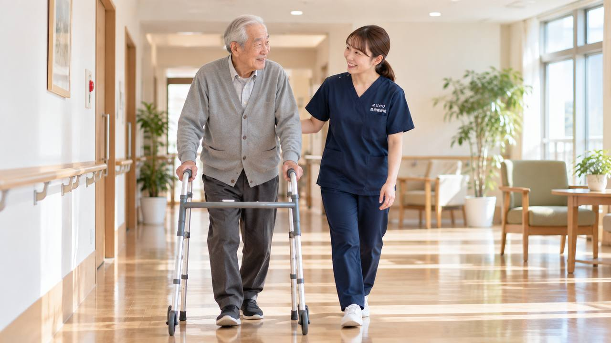

杖や歩行器をすすめられても、使い始めるまでには間があくものです。ここでは、杖と歩行器の違い、だれが道具を選ぶのか、高さが合わないと何が起きるのか、そして道具を使いこなすために体の側で何がいるのかを、順にご説明します。
この記事のポイント
杖や歩行器は、体を預ける道具です。高さが合わないまま使うと、肩や手首に新しい痛みが出ることがあります。どの道具を使うかを決めるのはケアマネジャーと福祉用具専門相談員、そしてリハビリの専門職で、当院の役割はその道具を使える体の側を整えることです。腰痛症や神経痛などの病名について医師が同意書を書けば、医療保険で受けられます。1回の施術は総額3,950円、1割負担の方でおよそ395円です。
「杖はまだ早い」と言っているうちに、歩く時間が減っていく
すすめられても「まだ大丈夫」と、杖を袋に入れたまましまっている方をよく見かけます。支えがないぶん家の中では壁や家具を伝って歩き、外に出る回数はだんだん減っていきます。買い物と通院をご家族が代わるようになると、歩く機会そのものが一日の中から抜け落ちます。
歩かない期間が続くと、脚の力が落ちるだけでは済みません。股関節の前側や膝の裏、足首が硬くなり、歩幅が狭まって、いっそう歩きにくくなります。道具は弱った証拠ではなく、歩く時間を保つための手段です。使い始める時期が早いほど、動ける範囲を保ちやすくなります。
杖と歩行器は、何がどう違うのか
一本の杖は片手で軽く支えるもので、預けられる重さはそれほど多くありません。先が4つに分かれた多点杖は接地する面が広く、その分だけ安定します。歩行器は両手で囲むように支えるので、体重をかなり預けられます。持ち上げて前に出す固定型、左右を交互に動かす交互型、車輪とブレーキがついた歩行車、と種類が分かれます。
混同されやすいのがシルバーカーです。自分の足で歩ける方が荷物を運び、疲れたら腰かけるための道具で、体重を預ける作りにはなっていません。ふらつきのある方が支えのつもりで押すと、前に滑って転ぶことがあります。支えがほしいのか荷物を運びたいのか、目的を分けて考えてください。
道具を選ぶのは、だれの役目か
選定と調整は、ケアマネジャーと福祉用具専門相談員、それに理学療法士や作業療法士の役目です。介護保険で借りる場合はケアプランに載せたうえで、相談員が体に合わせて高さを合わせ、使い方を説明して貸し出します。当院が「この歩行器にしましょう」と決めることはありません。
ただ、訪問していると見えることがあります。玄関の上がりかまちで毎回ふらつく、廊下が狭くて歩行器を回せない、握力が落ちてブレーキを最後まで握れていない。こうした様子は記録に残してケアマネジャーへお伝えします。同じ情報が関わる人に届くほど、道具の見直しは早く進みます。
介護保険で借りられるもの、自分で買うもの
歩行器と、松葉づえ・ロフストランドクラッチ・多点杖といった歩行補助つえは、介護保険の福祉用具貸与の対象です。車いすや特殊寝台とは違い、要支援や要介護1の方でも借りられます。一方、いわゆるT字型の一本杖は貸与の対象に入っておらず、ご自身で購入することになります。
近ごろは一部の用具について、借りるか買うかを選べる仕組みも始まっています。どちらが向くかは使う期間や体の状態で変わりますので、ケアマネジャーと福祉用具専門相談員にご確認ください。なお訪問鍼灸マッサージは医療保険を使うため、介護保険の限度額とは別枠です。歩行器を借りていても、限度額を圧迫することはありません。
高さが合っていないと、別のところが痛くなる
杖の高さの目安は、腕を下ろしたときの手首のあたり、または足の付け根の外側にある出っ張りの高さです。握ったときに肘が少しゆるむくらいが扱いやすくなります。高すぎると肩をすくめたまま歩くことになって首から肩の前側が張り、低すぎれば前かがみになって腰の下のほうが縮みます。
歩行器も同じで、高ければ肩がすくみ、低ければ背中が丸まります。数か月使ううちに体の状態が変わって、合わなくなることもあります。手のひらの付け根がしびれる、肩が上がらない、腰が以前より痛い。こうした変化が出たときは、年のせいと片づけずに、まず高さを見てもらってください。
道具を使いこなすには、体の側にも準備がいる
歩行器を押すには、手首を反らせて体重を支え、肩甲骨のまわりで上体を保つ動きが要ります。杖なら、握る手の力と、体を杖の側へ預ける動きが必要です。手首や肩が硬いまま道具だけ渡されても、使いにくくて押し入れにしまわれてしまいます。
私たちが手を当てるのは、まさにそこです。体を預けるときに働く手首と前腕、肩の前側と肩甲骨のまわり、それに歩幅を決める股関節の前面、膝の裏、足首。硬さがやわらぐと動かしやすくなったと話される方もいますが、効き方には個人差があります。医師の治療とリハビリが土台で、鍼灸はそれを補う立場です。
保険は使えるのか、1回いくらか
「歩けない」「杖を使っている」ということ自体が、保険を使う理由になるわけではありません。腰痛症、神経痛、五十肩、頸肩腕症候群といった病名について、通院がむずかしく施術が必要だと医師が同意書に記した場合に、医療保険で受けられます。同意書をお願いする段取りは当院が引き受けますので、ご家族が病院にお願いに行っていただく必要はありません。
お金のことも先にお伝えします。1回の施術の総額は3,950円で、1割負担の方はおよそ395円、2割負担の方は790円です。お住まいが豊中市、吹田市、茨木市、箕面市、摂津市、池田市、尼崎市、伊丹市、淀川区、東淀川区、都島区、北区、旭区であればうかがえます。この範囲なら出張料などを別にいただくことはなく、住所によって金額が変わることもありません。
訪問した日に見ている、歩きにくさのもと
施術に入る前に、その日の歩き方を少し見せてもらいます。杖の先のゴムがすり減って丸くなっていないか、歩行器のブレーキが最後まで効くか、部屋のどのあたりで速度が落ちるか。道具の傷みはご本人が気づきにくく、「最近こわい」という言葉になって出てきます。
体の側では、かかとが浮いていないか、片側だけ膝が伸びきらないか、足の指が床をつかめているかを見ます。あわせて、かかとと仙骨に押しても白くならない赤みがないかも確かめます。座っている時間が長い方では、道具より先にそちらが問題になっていることがあります。
家族と関係する職種で、同じやり方をそろえる
使い方は、ご家族・ヘルパー・訪問看護で同じにそろっているほうが安全です。杖を持つのは痛くないほうの手、動かす順は杖・つらいほうの脚・楽なほうの脚、向きを変えるときは小刻みに。この手順を紙に書いて、歩き出す場所の壁に貼っておきます。
訪問リハビリを受けている方は、同じ部位について医療保険のリハビリと鍼灸を同時に算定することはできません。介護保険の訪問リハビリやデイサービスは別の枠ですから、そちらとの併用に差し支えはありません。どこで何を受けているかをケアマネジャーに伝えておけば、重ならないように組んでもらえます。詳しくは「訪問鍼灸と訪問リハビリの違い」もご覧ください。
こんなときは、道具の相談より先に受診を
急に片側の手足が動かない、ろれつが回らない、顔がゆがむ。このときは救急車を呼んでください。転んだあとに足の付け根が痛くて立てない場合は、太ももの付け根の骨折が疑われますので、その日のうちに整形外科へ。片方の脚だけが腫れて熱を持ち、ふくらはぎが痛むときも、早めの受診が要ります。
少し歩くと脚がしびれ、休むとまた歩けるのを繰り返すときは、背骨や脚の血管の病気が隠れていることがあります。歩き方が数週間で急に悪くなる、尿が出にくい・漏れる、股のまわりがしびれるといった変化も、早めに整形外科へ。頭を打ったあと数週間してからぼんやりする・ふらつく・頭痛が強まる場合は、慢性硬膜下血腫の可能性があります。
よくある質問
杖や歩行器を借りるのに、介護認定は必要ですか？
介護保険の福祉用具貸与を使うには、要支援または要介護の認定が必要です。認定がない場合はご自身で購入するか、お住まいの市区町村の制度について地域包括支援センターにご相談ください。なお訪問鍼灸マッサージのほうは医療保険を使いますので、介護認定がなくても、医師の同意書があれば受けられます。
歩行器を使い始めたら、施術は必要なくなりますか？
道具は体を支えてくれますが、硬さや痛みまで引き受けてくれるわけではありません。むしろ腕に体重を預けるぶん、手首や肩の負担は増えることがあります。歩ける距離が延びて生活が広がったあとも、体を整えておくほうが楽に過ごしやすくなります。回数や間隔は、そのときの状態に合わせて調整していきます。
杖はどちらの手で持つのが正しいですか？
痛みや麻痺のある側と反対の手で持つのが基本です。杖・つらいほうの脚・楽なほうの脚、の順に出すと安定します。ただし体の状態によって例外もありますので、理学療法士や福祉用具専門相談員に一度確認しておくと安心です。
T字型の杖は介護保険で借りられますか？
いわゆるT字型の一本杖は福祉用具貸与の対象に入っておらず、購入になります。多点杖・松葉づえ・ロフストランドクラッチ・歩行器は貸与の対象です。どれが向くかは体の状態で変わりますので、ケアマネジャーにご相談ください。
杖を使うと肩や手首が痛くなってきました。
高さが合っていない可能性があります。高すぎると肩をすくめた姿勢になり、低すぎると前かがみになります。まず福祉用具専門相談員に高さを見てもらってください。そのうえで残る痛みやこわばりについては、医師が施術の必要を認めれば医療保険での施術の対象になります。
施術は1回いくらで、どこまで来てもらえますか？
1回の施術は総額3,950円で、自己負担は1割の方でおよそ395円、2割の方で790円です。豊中・吹田・茨木・箕面・摂津・池田、尼崎・伊丹、淀川区・東淀川区・都島区・北区・旭区にうかがっています。この範囲なら出張料は別にいただきません。